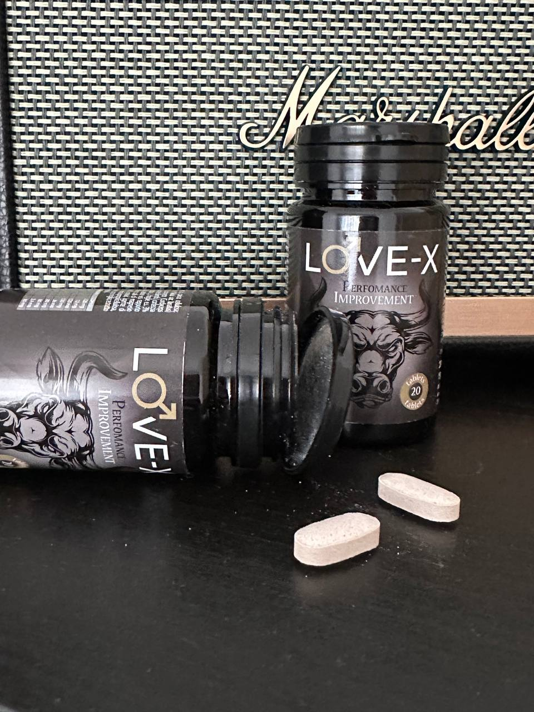
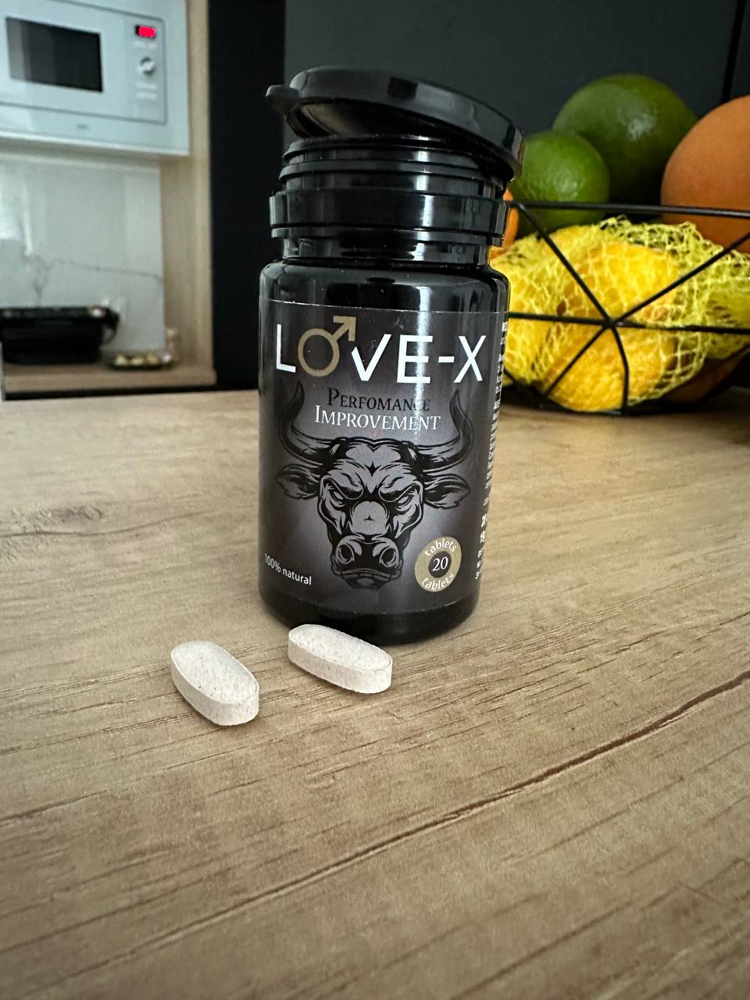
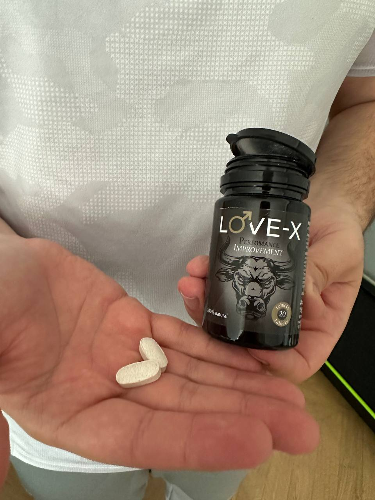

Ha aparecido en España un fármaco que los médicos llaman el «asesino de la impotencia». Está comprobado: ¡devuelve la potencia incluso a personas de 102 años!
En esta foto está el centenario español José Ramón Díaz. A la edad de 102 años participó en los ensayos clínicos de un nuevo fármaco para restaurar la potencia en hombres mayores. Según José, antes de esto estuvo sin potencia durante 24 años. Los trabajadores médicos que siguieron el experimento confirmaron este hecho.
COMO RESULTADO DE LOS ESTUDIOS CLÍNICOS, LA POTENCIA DEL HOMBRE VOLVIÓ DESPUÉS DE UN TRATAMIENTO DE DOS SEMANAS. AHORA UN HOMBRE PUEDE TENER RELACIONES SEXUALES COMPLETAS 1 O 2 VECES POR SEMANA, LO QUE ANTES ERA INALCANZABLE PARA ESTA EDAD.
¡Los científicos señalan que el sexo en la vejez es como una pastilla de juventud! ¡Al normalizar su vida sexual, José Ramón Díaz planea vivir hasta los 150 años!
Este experimento es uno de los pocos que se han realizado con el nuevo fármaco Love-X, que los médicos denominan "el asesino de la impotencia" por su alta eficacia. Desde finales de la semana pasada Love-X se puso a disposición de los ciudadanos españoles.
Desde el primer día, Love-X provocó una gran demanda, por lo que, según el fabricante, el Instituto Español de Urología, ¡todo el lote producido del medicamento podría agotarse en unas pocas semanas!
Según nos cuenta Farmastok España, que distribuye directamente el fármaco en todo el país, Love-X lo encargan no sólo los pensionistas a los que está destinado, sino también los hombres jóvenes, ya que Love-X lleva el sexo a un nuevo nivel, aumentando el sexo en 3 -4 veces Placer y mejora del orgasmo.
Hoy hablaremos de un fármaco que obviamente «matará» no sólo la impotencia en los hombres, sino también el conocido Viagra (¡que ya no será necesario para nadie!) en el estudio con un destacado urólogo español, jefe del departamento. de Medicina Práctica de la Universidad de Madrid, Profesor Mateo Vicente.
- Mateo, ¿es cierto que el sexo puede rejuvenecer el cuerpo de un hombre y prolongar su vida?
- Esto es cierto. Mire, la tarea de cualquier organismo vivo en el planeta es continuar la vida. Esta es también la tarea de la raza humana. Por tanto, todo en nuestro cuerpo está configurado para poder dejar descendencia. Tan pronto como un hombre pierde la oportunidad de tener relaciones sexuales, la naturaleza se vuelve más complicada y trata de deshacerse de él.
Por lo tanto, una vez que un hombre se vuelve impotente, envejece muy rápidamente y muere poco después. Por ejemplo, su músculo cardíaco se debilita rápidamente, lo que puede provocar ataques cardíacos o paro cardíaco, sus vasos sanguíneos se obstruyen rápidamente con colesterol (durante las relaciones sexuales, se limpian) o su próstata se inflama debido al estancamiento de espermatozoides en ella. A su vez, la inflamación de la próstata está plagada de cáncer inoperable. Hay muchos cambios patológicos en el cuerpo después de la aparición de la impotencia. Basta con no tener relaciones sexuales durante seis meses y su salud se deteriorará significativamente. La salud se conserva sólo para unos pocos.
Si un hombre logra restaurar la función sexual a tiempo y puede volver a tener relaciones sexuales, entonces el proceso de desvanecimiento no sólo se detendrá, sino que también se revertirá. El cuerpo se volverá más joven. Esto está demostrado por la ciencia.
Esto es exactamente lo que Love-X te permite hacer.
Por lo tanto, es extremadamente importante que todo hombre mantenga la oportunidad de tener relaciones sexuales durante el mayor tiempo posible. Y por eso es sumamente importante utilizar este medicamento si la impotencia ya ha aparecido o ha comenzado a manifestarse.
¡Atención! ¡Comprueba si tienes síntomas de disminución de la función sexual! Si hay al menos uno, ¡en un futuro próximo te enfrentarás a una impotencia total!
- Falta de erección por más de 2 semanas.
- Erección débil (el pene está flácido, le falta dureza)
- Disminución de la frecuencia de las erecciones.
- Pérdida de erección durante las relaciones sexuales (¡un síntoma muy alarmante!)
- Disminución de la sensibilidad del pene, disminución de la fuerza del orgasmo.
- Se expulsa una pequeña cantidad de espermatozoides.
- Disminución del interés por las mujeres.
- Estado de ánimo sensiblero y “poco masculino”
- Pérdida del deseo de tener relaciones sexuales (¡el segundo síntoma extremadamente alarmante!)
- Eyección prolongada y dolorosa de espermatozoides.
Love-X restaura la función sexual con 10 años de antelación, por lo que a partir de los 60 años se recomienda realizar un curso de Love-X una vez cada 10 años. Todo este tiempo tendrás potencia.
- Cuéntanos cómo Love-X restaura y mejora la potencia. ¿Cómo actúa este medicamento?
- Love-X tiene múltiples efectos complejos en el cuerpo, razón por la cual ayuda tan bien. Puede usarse como un refuerzo de erección de una sola vez, si necesita fortalecer su erección inmediatamente antes del sexo o aumentar el placer del sexo. También se puede utilizar para el fin previsto, es decir, restaurar la potencia. Luego se debe aplicar en un curso de 2-3 semanas.
Como ya dije, Love-X tiene muchos efectos positivos diferentes en el cuerpo masculino. Hay más de 30 en total, pero enumeraré solo los principales.
Aumenta el flujo sanguíneo al pene
Cuanta más sangre fluya hacia el pene, más fuerte será la erección. Además, Love-X aumenta el tamaño del pene erecto casi un 20%, ya que ayuda a estirar y aumentar la capacidad de los cuerpos cavernosos del pene.
Mejora la producción de testosterona
¡Debido a esto, la libido del hombre aumenta! Los hombres con niveles altos de testosterona son más activos (y esto es necesario en la vejez) y también quieren tener relaciones sexuales con más frecuencia. Los hombres recuperan el interés por el sexo opuesto. ¡Las mujeres empiezan a entusiasmarse de nuevo!
Además, un alto nivel de testosterona protege al cuerpo de los radicales libres (reduce la probabilidad de desarrollar cáncer), mejora la salud de los órganos internos (esta hormona es necesaria para el correcto funcionamiento de 17 órganos masculinos, desde la próstata hasta el páncreas). y mejora la apariencia del hombre.
Es debido a la falta de testosterona que después de 40 años el cuerpo de un hombre comienza a decaer lentamente.
¡Love-X restaura los niveles normales de testosterona en solo 3 días de uso regular!
Afecta las terminaciones nerviosas de la médula espinal.
Debido a esto, este medicamento aumenta la excitación y el deseo sexual casi 5 veces, debido a esto el orgasmo también se intensifica y prolonga. Una consecuencia importante de tomar el medicamento es un aumento en la duración de las relaciones sexuales. Hoy en día ESTE ES EL ÚNICO FÁRMACO QUE TRATA LA EYACULACIÓN PRECOZ. Es decir, simplemente no existen otras drogas similares.
Restaura la dureza de las válvulas vasculares.
Dos grandes vasos se acercan al pene: una arteria, a través de la cual ingresa la sangre, y una vena, a través de la cual se drena la sangre del pene. La vena tiene válvulas especiales que mantienen la sangre en el pene durante la erección. Con la edad, estas válvulas se vuelven decrépitas y ya no retienen la presión arterial. Su debilitamiento es una de las causas más comunes de impotencia en hombres mayores, representando hasta el 98% de los casos. Love-X restaura la dureza de las válvulas venosas, por lo que devuelve la potencia al hombre no durante unas horas, como lo hace Viagra, sino durante muchos años.
Es decir, como puede ver, Love-X tiene toda una gama de efectos útiles. ¡Y ni siquiera he enumerado todo todavía!
Love-X elimina todos los problemas a la vez como un complejo que puede impedir que un hombre desarrolle una erección y excitación, y no solo un problema, como lo hacen otras drogas. Por eso Love-X ayuda tan maravillosamente.
Love-X fue creada por destacadas mentes científicas españolas, ganadoras de numerosos premios y becas y reconocidas en todo el mundo. Los líderes de desarrollo son los profesores Sebastián Moreno y Alfredo Domínguez, a ambos los conozco personalmente. Estos son científicos destacados que están impulsados no solo por la sed de crear algo nuevo, sino también por un deseo sincero de traer a este mundo algo que sea realmente útil para las personas y algo que les ayude a mejorar sus vidas.
Por lo tanto, estos científicos crearon el medicamento no para aumentar temporalmente la potencia, como lo hicieron en su momento los creadores de Viagra (que ganaron miles de millones de dólares con esto, enganchando a toda la mitad masculina de la población del planeta a Viagra), sino para restaurar completamente la potencia. Para que cualquier hombre pueda realizar un curso de Love-X y decir adiós para siempre a los problemas sexuales. Y, por supuesto, lo consiguieron. A juzgar por la eficacia que demuestra este fármaco.
- Cuéntenos sobre la escasez de Love-X. ¿Qué esta pasando ahora? ¿Qué explica una demanda tan frenética?
- La demanda, has dicho bien, es frenética. Pero es de esperar. Porque se trata de un fármaco que probablemente han estado esperando todos los hombres que ya han tenido problemas con la potencia en mayor o menor medida. Hace dos años se supo que se estaba desarrollando un medicamento de este tipo.
Me parece que la demanda en sí está influenciada por dos factores principales.
Primer factor – ¡es un gran producto! Y para muchos hombres es una excelente oportunidad para deshacerse de la impotencia. Especialmente si hablamos de hombres mayores.
Segundo factor – ¡simplemente no existe otra alternativa y nunca la ha habido! Todas las drogas de potencia que existen hoy en día no resisten las críticas. Son dañinos, químicos y además solo ayudan temporalmente. ¡No existe ninguna droga que se acerque a esta en ningún lugar del mundo!
Teniendo todo esto en cuenta, tan pronto como apareció se formó una demanda explosiva de Love-X. Al mismo tiempo, no es posible producir Love-X en grandes volúmenes debido a la compleja composición y a la tecnología de extracción en frío utilizada; se requieren instalaciones de laboratorio especiales, de las cuales solo hay unas pocas en el Instituto. ¡La extracción en frío le permite obtener extractos de plantas altamente concentrados, que aumentan la eficacia del fármaco casi 15 veces!
Por cierto, estos laboratorios ultramodernos también se inventaron en España. No existe tal equipo en ningún lugar del mundo. Están creados específicamente para Love-X. ¡Y ésta es también su singularidad! No se fabrica con tecnología estándar y esto, por supuesto, también aumenta su eficiencia.
- ¿Dónde y cómo se vende actualmente Love-X? ¿A que precio? ¿De nada sirve buscarlo en las farmacias?
- Sí, no lo encontrarás en las farmacias, no lo venden. De momento, Love-X es distribuida en España únicamente por Pharmastok España, que es distribuidor directo del Instituto Español de Urología y representa sus intereses. Como el medicamento es escaso y ya se vende bien, decidimos no suministrarlo a las farmacias. Pero eso es algo bueno. En primer lugar, esta solución nos permite eliminar por completo el riesgo de falsificaciones (¡que inevitablemente aparecerían!). Y en segundo lugar, le permite mantener los precios bajos. ¡Love-X costaría muchas veces más en las farmacias!
- ¿Cuándo terminará Love-X?
- Teniendo en cuenta la demanda actual (si se mantiene aproximadamente igual en los próximos días y no aumenta varias veces), el medicamento durará un par de semanas más. Sin embargo, me gustaría aconsejar a todos los hombres que quieran recuperar la potencia en la vejez o mejorar la calidad del sexo en la juventud que no se demoren en realizar el pedido. Ahora es imposible decir exactamente cuándo llegará el próximo lote y a qué precio, si irá al mercado interno o al extranjero. El instituto ya ha recibido generosas ofertas de estadounidenses y franceses para ampliar la producción. Y cuando el capital extranjero llega al país, los bienes producidos con su ayuda, por regla general, se encarecen y se exportan grandes cantidades.
Por lo tanto, ahora es el mejor momento para pedir Love-X. Ya que puedes comprar el medicamento original al precio más bajo.
¡Atención! Nuestro programa contactó con «Pharmastock España» y solicitó información detallada sobre Love-X. Te lo presentamos a continuación
Nombre comercial del medicamento: Love-X
Principales ingredientes activos: extracto de pallas, betaflavocina, gluco-zinc (forma especial de fácil absorción), extracto de cordyceps, extracto de helecho peludo, extracto de eurycoma, extracto de maca, alfa-niacina
Componentes adicionales: ¡más de 50!
- Impotencia relacionada con la edad
- Erección débil (lenta, insuficiente)
- Eyaculación precoz
- Baja fertilidad (mala calidad del esperma)
- Libido ausente o disminuida.
- Enfermedades de la próstata
- Tamaño del pene insuficiente
Recomendaciones de uso
Efectos secundarios: ninguno. El producto es completamente natural, no sólo inofensivo, sino también beneficioso para los hombres. Se puede combinar con alcohol
Cómo utilizar
Para potenciar la erección y aumentar el placer durante las relaciones sexuales: 1 cápsula 5 minutos antes del sexo
Para restaurar la potencia - curso de 14 días, 1 cápsula por la mañana y por la noche al día
En la web del fabricante del Instituto Español de Urología encontramos una encuesta de hombres que ya han probado Love-X. La única pregunta en esta encuesta es «¿Love-X le proporcionó una potencia estable?» Más de 50.000 españoles ya han participado en esta encuesta.
- Love-X ayudó a restaurar o mejorar la potencia: 98,8% de los encuestados
- Love-X no ayudó – 0,4% de los encuestados
- Difícil de responder: 0,8% de los encuestados
Resultados de la encuesta:
Como puede ver, Love-X ayuda a la mayoría de los hombres. ¡Probablemente este sea un muy buen producto!
¿Cómo pedir Love-X?
«Farmastok España» nos dijo qué debemos hacer para pedir Love-X al precio más bajo con descuentos adicionales (¡solo para nuestros lectores!)
- Ubicado en España. El medicamento no se envía fuera del país.
- Para recibirlo es necesario dejar una solicitud. Love-X se entrega a todas las regiones de España sólo bajo petición previa, que se puede dejar directamente en esta página (encontrará el formulario de solicitud más abajo)
- Después de 3-4 días requeridos para la entrega, se debe recoger Love-X del mensajero y se debe realizar el pago. Pago al recibir Love-X directamente en sus manos, ¡sin necesidad de transferir nada por adelantado!
Para pedir Love-X al precio mínimo debes:
Anonimato garantizado por el fabricante
Además, la empresa «Pharmastok España» nos aseguró que el medicamento se envía cumpliendo con todas las condiciones necesarias de anonimato. Ni siquiera el mensajero sabrá qué hay en el paquete. No hay ni una sola inscripción en el paquete de envío sobre lo que hay dentro.
¡Importante! Como eres nuestro lector, puedes pedir Love-X con un descuento adicional. Para ello es necesario realizar un pedido desde esta página.
¡Love-X se agota muy rápido!
Por el momento quedan paquetes:
485
Tiempo aproximado durante el cual Love-X finalizará por completo: ¡15-20 minutos!
Todavía estás a tiempo de pedir Love-X, ¡pero debes darte prisa!
Comentarios


